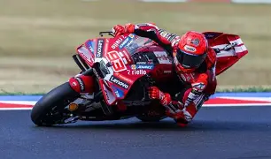
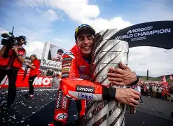

Bienvenido a mi sitio web
Soy Marc Marquez
Indice
Fotos
Descripcion web
Fuentes
Gustos en comun

Fdo. Marc Marquez
Marc Márquez es un piloto español de MotoGP, considerado uno de los mejores motociclistas de la historia, con nueve títulos mundiales y múltiples récords en la categoría reina del motociclismo.
Fotos



Descripcion web
Esta página web está dedicada a Marc Márquez, uno de los pilotos más exitosos de la historia del motociclismo. En ella se presenta información sobre su trayectoria deportiva, sus principales logros y su carrera en el Campeonato del Mundo de MotoGP.
Fuentes
Gustos en comun
Marc Marquez y yo tenemos gustos en comun como:
- Deporte
- Motos
- España
- Pizza con piña
- El hormiguero
Biografia
Wikipedia
Ir a Dustin Poirier